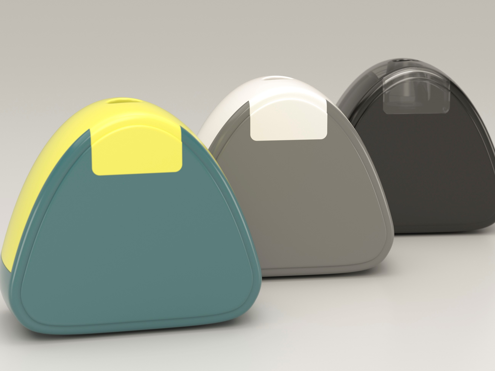
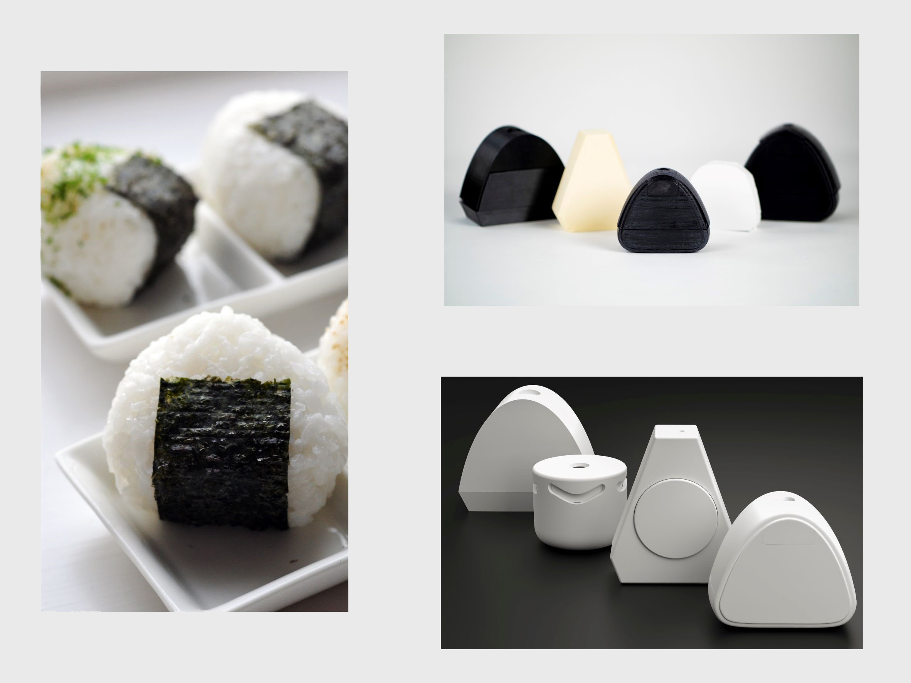

Onigiri Pencil Sharpener
Is a portable handheld electronic sharpener designed to be ergonomic and easy to empty.
The sharpener is designed for injection-molded plastic; the prototype is a blend of PLA and PETG 3D printed plastic. The mechanism uses a simple dc motor and a 3rd party sharpener blade.

The different colored top indicates where the snap fits that open the sharpener are located.


Many iterations were needed to make a portable sharpener that is enjoyable to hold and small enough to house the motor. The playful shape is influenced by Japanese Onigiri rice balls, encouraging users to interact and hold the sharpener.

This electronic sharpener is small enough to take along with you.